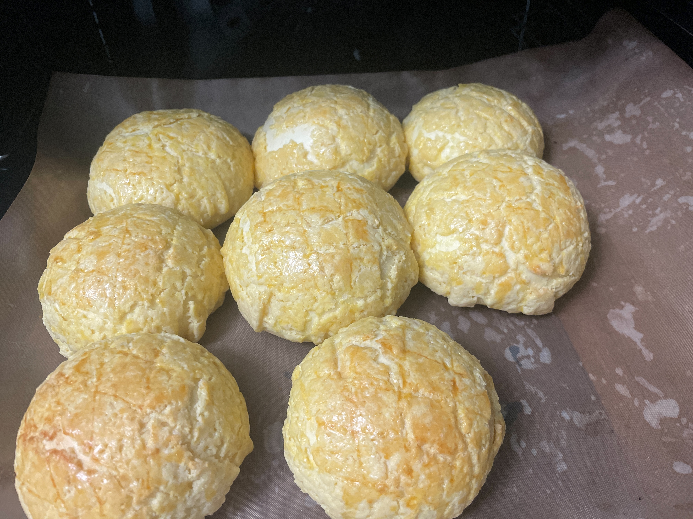
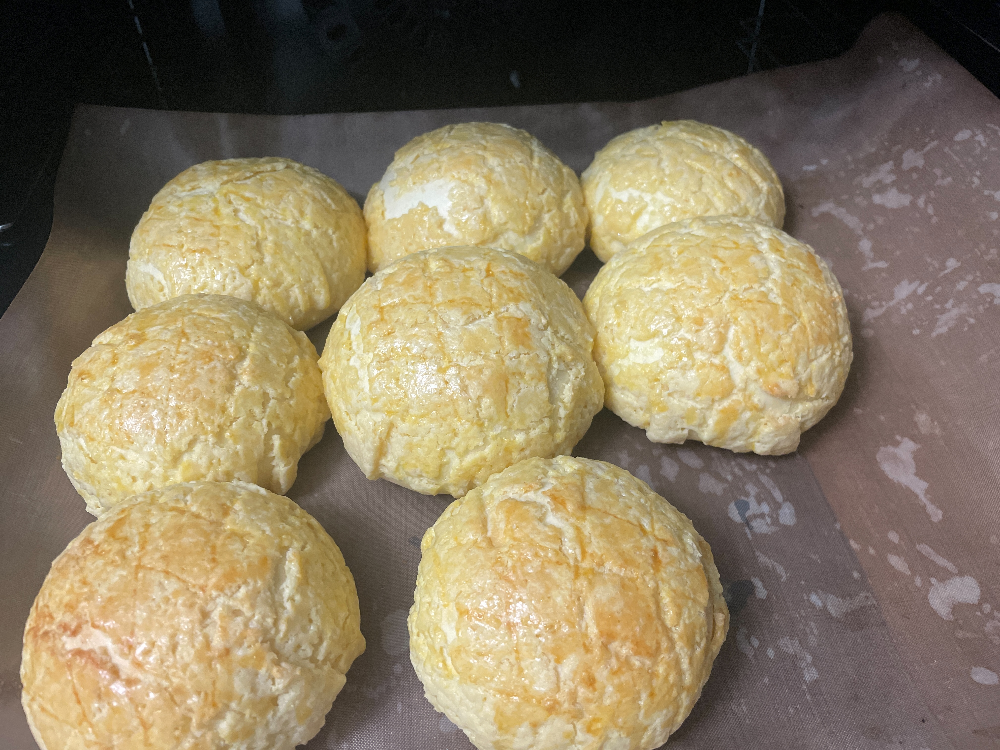

I like the feeling of controlling the brush, it can make people calm down
 

I used to love making bread, especially kneading dough. It was a great stress reliever.
I have taught myself many musical instruments, but my favorite is the flute. Although I didn’t blow well, I enjoyed the process very much.